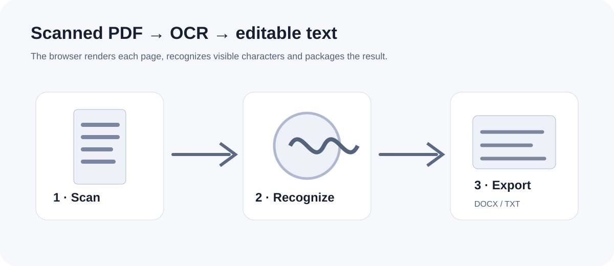
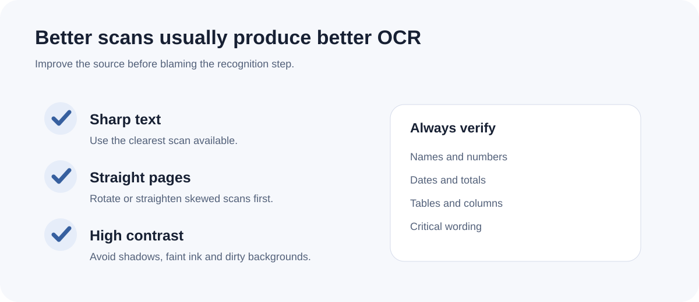

How to prepare a scanned PDF for OCR
OCR cannot recover information that is missing from the scan. Preparing the source pages well can improve recognition quality before the document reaches the OCR engine.
Updated September 28, 2026 · FreePDF Tools
Straighten the pages
Pages that are sideways or strongly skewed make reading order harder. Rotate obviously misoriented pages before OCR when possible.
Prefer clear text and contrast
Clean black-on-white text at a sensible resolution is easier to recognize than tiny, blurred or heavily compressed text. Avoid repeatedly resizing a scan before OCR.
Watch tables and columns
Multi-column reports and dense tables are more difficult because OCR must first decide the reading order. Expect extra review work around numeric columns and merged cells.
Plan a manual review
OCR output is a recognition result, not a proof of the source. Check names, numbers, dates, punctuation and any value that affects a decision before using the editable file.


Start OCR
Recognize text from image-only PDF pages in the browser.